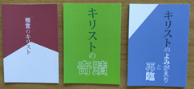
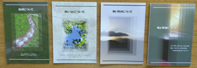
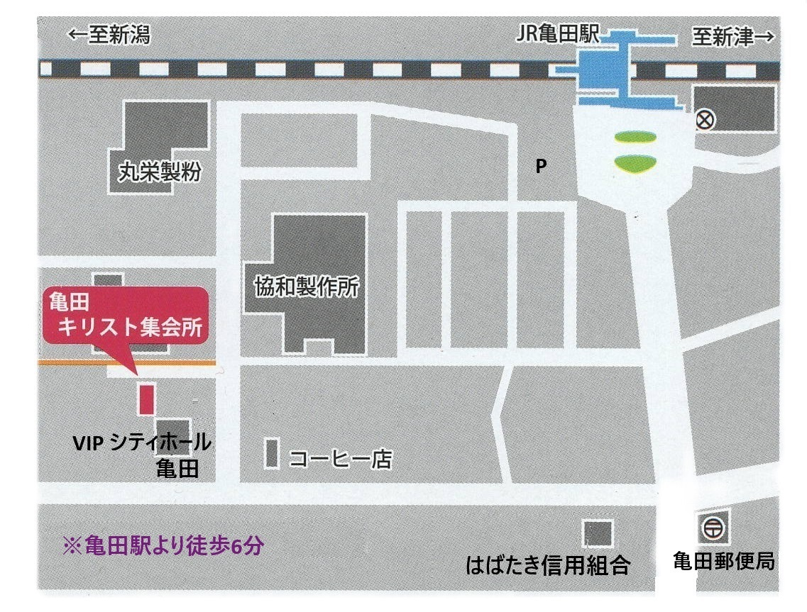

書物の案内



聖書の分冊と聖書に関する書物を無料で差し上げています。ご希望の方はメールまたは、ハガキに住所・氏名を記入の上、
「聖書を希望する」または、「希望する書物名」を書き、集会所あてに送ってください。
質問等がありましたら、何なりとお問い合わせください。
私たちの集まりは、聖書に書かれていることに準じていて、次のことばによります。
使徒の働き(Acts)2章41～42節
【彼のことばを受け入れた人々はバプテスマを受けた。
その日、三千人ほどが仲間に加えられた。彼らはいつも、使徒たちの教えを守り、交わりを持ち、パンを裂き、祈りをしていた。】
【Then they that gladly received his word were baptized: and the same day there were added unto them about three thousand souls. And they continued stedfastly in the apostles' doctrine and fellowship, and in breaking of bread, and in prayers.】
また、牧師制度を持たず、信者はすべて兄弟として呼び合い、先生と呼び合うことはありません。
福音集会
バイブルクラス
日曜学校
（バイブルクラスは中学生、
日曜学校は小学生が対象です。）
※献金や寄付を要求することはありません※
〒950-0163
新潟市江南区東船場4丁目3-38



聖書の分冊と聖書に関する書物を無料で差し上げています。ご希望の方はメールまたは、ハガキに住所・氏名を記入の上、
「聖書を希望する」または、「希望する書物名」を書き、集会所あてに送ってください。
質問等がありましたら、何なりとお問い合わせください。